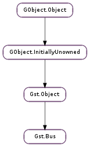

| static | new() |
| add_signal_watch() | |
| add_signal_watch_full(priority) | |
| add_watch(priority, func, *user_data) | |
| async_signal_func(message, data) | |
| create_watch() | |
| disable_sync_message_emission() | |
| enable_sync_message_emission() | |
| have_pending() | |
| peek() | |
| poll(events, timeout) | |
| pop() | |
| pop_filtered(types) | |
| post(message) | |
| remove_signal_watch() | |
| set_flushing(flushing) | |
| set_sync_handler(func, *user_data) | |
| sync_signal_handler(message, data) | |
| timed_pop(timeout) | |
| timed_pop_filtered(timeout, types) |
| Name | Type | Flags | Description |
|---|---|---|---|
| enable-async | bool | w/c | Enable async message delivery for bus watches and Gst.Bus.pop () |
| Name | Parameters | Return | Description |
|---|---|---|---|
| message | Gst.Message | A message has been posted on the bus. This signal is emitted from a GLib.Source added to the mainloop. this signal will only be emitted when there is a mainloop running. | |
| sync-message | Gst.Message | A message has been posted on the bus. This signal is emitted from the thread that posted the message so one has to be careful with locking. This signal will not be emitted by default, you have to call Gst.Bus.enable_sync_message_emission () before. |
| Name | Type | Access |
|---|---|---|
| object | Gst.Object | r |
Bases: Gst.Object
The Gst.Bus is an object responsible for delivering Gst.Message packets in a first-in first-out way from the streaming threads (see Gst.Task ) to the application.
Since the application typically only wants to deal with delivery of these messages from one thread, the Gst.Bus will marshall the messages between different threads. This is important since the actual streaming of media is done in another thread than the application.
The Gst.Bus provides support for GLib.Source based notifications. This makes it possible to handle the delivery in the glib mainloop.
The GLib.Source callback function Gst.Bus.async_signal_func () can be used to convert all bus messages into signal emissions.
A message is posted on the bus with the Gst.Bus.post () method. With the Gst.Bus.peek () and Gst.Bus.pop () methods one can look at or retrieve a previously posted message.
The bus can be polled with the Gst.Bus.poll () method. This methods blocks up to the specified timeout value until one of the specified messages types is posted on the bus. The application can then Gst.Bus.pop () the messages from the bus to handle them. Alternatively the application can register an asynchronous bus function using Gst.Bus.add_watch () or Gst.Bus.add_watch (). This function will install a GLib.Source in the default glib main loop and will deliver messages a short while after they have been posted. Note that the main loop should be running for the asynchronous callbacks.
It is also possible to get messages from the bus without any thread marshalling with the Gst.Bus.set_sync_handler () method. This makes it possible to react to a message in the same thread that posted the message on the bus. This should only be used if the application is able to deal with messages from different threads.
Every Gst.Pipeline has one bus.
Note that a Gst.Pipeline will set its bus into flushing state when changing from READY to None state.
Last reviewed on 2012-03-28 (0.11.3)
Adds a bus signal watch to the default main context with the default priority (GLib.PRIORITY_DEFAULT ). It is also possible to use a non-default main context set up using GLib.MainContext.push_thread_default () (before one had to create a bus watch source and attach it to the desired main context ‘manually’).
After calling this statement, the bus will emit the “message” signal for each message posted on the bus.
This function may be called multiple times. To clean up, the caller is responsible for calling Gst.Bus.remove_signal_watch () as many times as this function is called.
MT safe.
| Parameters: | priority (int) – The priority of the watch. |
|---|
Adds a bus signal watch to the default main context with the given priority (e.g. GLib.PRIORITY_DEFAULT ). It is also possible to use a non-default main context set up using GLib.MainContext.push_thread_default () (before one had to create a bus watch source and attach it to the desired main context ‘manually’).
After calling this statement, the bus will emit the “message” signal for each message posted on the bus when the main loop is running.
This function may be called multiple times. To clean up, the caller is responsible for calling Gst.Bus.remove_signal_watch () as many times as this function is called.
There can only be a single bus watch per bus, you must remove any signal watch before you can set another type of watch.
MT safe.
| Parameters: |
|
|---|---|
| Returns: | The event source id. MT safe. |
| Return type: |
Adds a bus watch to the default main context with the default priority (GLib.PRIORITY_DEFAULT ). It is also possible to use a non-default main context set up using GLib.MainContext.push_thread_default () (before one had to create a bus watch source and attach it to the desired main context ‘manually’).
This function is used to receive asynchronous messages in the main loop. There can only be a single bus watch per bus, you must remove it before you can set a new one.
The watch can be removed using GLib.Source.remove () or by returning False from func.
| Parameters: |
|
|---|---|
| Returns: | |
| Return type: |
A helper Gst.BusFunc that can be used to convert all asynchronous messages into signals.
| Returns: | a GLib.Source that can be added to a mainloop. |
|---|---|
| Return type: | GLib.Source |
Create watch for this bus. The GLib.Source will be dispatched whenever a message is on the bus. After the GLib.Source is dispatched, the message is popped off the bus and unreffed.
Instructs GStreamer to stop emitting the “sync-message” signal for this bus. See Gst.Bus.enable_sync_message_emission () for more information.
In the event that multiple pieces of code have called Gst.Bus.enable_sync_message_emission (), the sync-message emissions will only be stopped after all calls to Gst.Bus.enable_sync_message_emission () were “cancelled” by calling this function. In this way the semantics are exactly the same as Gst.Object.ref () that which calls enable should also call disable.
MT safe.
Instructs GStreamer to emit the “sync-message” signal after running the bus’s sync handler. This function is here so that code can ensure that they can synchronously receive messages without having to affect what the bin’s sync handler is.
This function may be called multiple times. To clean up, the caller is responsible for calling Gst.Bus.disable_sync_message_emission () as many times as this function is called.
While this function looks similar to Gst.Bus.add_signal_watch (), it is not exactly the same – this function enables synchronous emission of signals when messages arrive; Gst.Bus.add_signal_watch () adds an idle callback to pop messages off the bus asynchronously. The sync-message signal comes from the thread of whatever object posted the message; the “message” signal is marshalled to the main thread via the main loop.
MT safe.
| Returns: | True if there are messages on the bus to be handled, False otherwise. MT safe. |
|---|---|
| Return type: | bool |
Check if there are pending messages on the bus that should be handled.
| Returns: | the Gst.Message that is on the bus, or None if the bus is empty. MT safe. |
|---|---|
| Return type: | Gst.Message |
Peek the message on the top of the bus’ queue. The message will remain on the bus’ message queue. A reference is returned, and needs to be unreffed by the caller.
| Parameters: |
|
|---|---|
| Returns: | the message that was received, or None if the poll timed out. The message is taken from the bus and needs to be unreffed with gst_message_unref() after usage. |
| Return type: |
Poll the bus for messages. Will block while waiting for messages to come. You can specify a maximum time to poll with the timeout parameter. If timeout is negative, this function will block indefinitely.
All messages not in events will be popped off the bus and will be ignored.
Because poll is implemented using the “message” signal enabled by Gst.Bus.add_signal_watch (), calling Gst.Bus.poll () will cause the “message” signal to be emitted for every message that poll sees. Thus a “message” signal handler will see the same messages that this function sees – neither will steal messages from the other.
This function will run a main loop from the default main context when polling.
You should never use this function, since it is pure evil. This is especially true for GUI applications based on Gtk+ or Qt, but also for any other non-trivial application that uses the GLib main loop. As this function runs a GLib main loop, any callback attached to the default GLib main context may be invoked. This could be timeouts, GUI events, I/O events etc.; even if Gst.Bus.poll () is called with a 0 timeout. Any of these callbacks may do things you do not expect, e.g. destroy the main application window or some other resource; change other application state; display a dialog and run another main loop until the user clicks it away. In short, using this function may add a lot of complexity to your code through unexpected re-entrancy and unexpected changes to your application’s state.
For 0 timeouts use Gst.Bus.pop_filtered () instead of this function; for other short timeouts use Gst.Bus.timed_pop_filtered (); everything else is better handled by setting up an asynchronous bus watch and doing things from there.
| Returns: | the Gst.Message that is on the bus, or None if the bus is empty. The message is taken from the bus and needs to be unreffed with gst_message_unref() after usage. MT safe. |
|---|---|
| Return type: | Gst.Message |
Get a message from the bus.
| Parameters: | types (Gst.MessageType) – message types to take into account |
|---|---|
| Returns: | the next Gst.Message matching type that is on the bus, or None if the bus is empty or there is no message matching type. The message is taken from the bus and needs to be unreffed with gst_message_unref() after usage. MT safe. |
| Return type: | Gst.Message |
Get a message matching type from the bus. Will discard all messages on the bus that do not match type and that have been posted before the first message that does match type. If there is no message matching type on the bus, all messages will be discarded.
| Parameters: | message (Gst.Message) – the Gst.Message to post |
|---|---|
| Returns: | True if the message could be posted, False if the bus is flushing. MT safe. |
| Return type: | bool |
Post a message on the given bus. Ownership of the message is taken by the bus.
Removes a signal watch previously added with Gst.Bus.add_signal_watch ().
MT safe.
| Parameters: | flushing (bool) – whether or not to flush the bus |
|---|
If flushing, flush out and unref any messages queued in the bus. Releases references to the message origin objects. Will flush future messages until Gst.Bus.set_flushing () sets flushing to False.
MT safe.
| Parameters: |
|
|---|
Sets the synchronous handler on the bus. The function will be called every time a new message is posted on the bus. Note that the function will be called in the same thread context as the posting object. This function is usually only called by the creator of the bus. Applications should handle messages asynchronously using the gst_bus watch and poll functions.
You cannot replace an existing sync_handler. You can pass None to this function, which will clear the existing handler.
| Parameters: |
|
|---|---|
| Returns: | |
| Return type: |
A helper Gst.BusSyncHandler that can be used to convert all synchronous messages into signals.
| Parameters: | timeout (int) – a timeout |
|---|---|
| Returns: | the Gst.Message that is on the bus after the specified timeout or None if the bus is empty after the timeout expired. The message is taken from the bus and needs to be unreffed with gst_message_unref() after usage. MT safe. |
| Return type: | Gst.Message |
Get a message from the bus, waiting up to the specified timeout.
If timeout is 0, this function behaves like Gst.Bus.pop (). If timeout is Gst.CLOCK_TIME_NONE, this function will block forever until a message was posted on the bus.
| Parameters: |
|
|---|---|
| Returns: | a Gst.Message matching the filter in types, or None if no matching message was found on the bus until the timeout expired. The message is taken from the bus and needs to be unreffed with gst_message_unref() after usage. MT safe. |
| Return type: |
Get a message from the bus whose type matches the message type mask types, waiting up to the specified timeout (and discarding any messages that do not match the mask provided).
If timeout is 0, this function behaves like Gst.Bus.pop_filtered (). If timeout is Gst.CLOCK_TIME_NONE, this function will block forever until a matching message was posted on the bus.